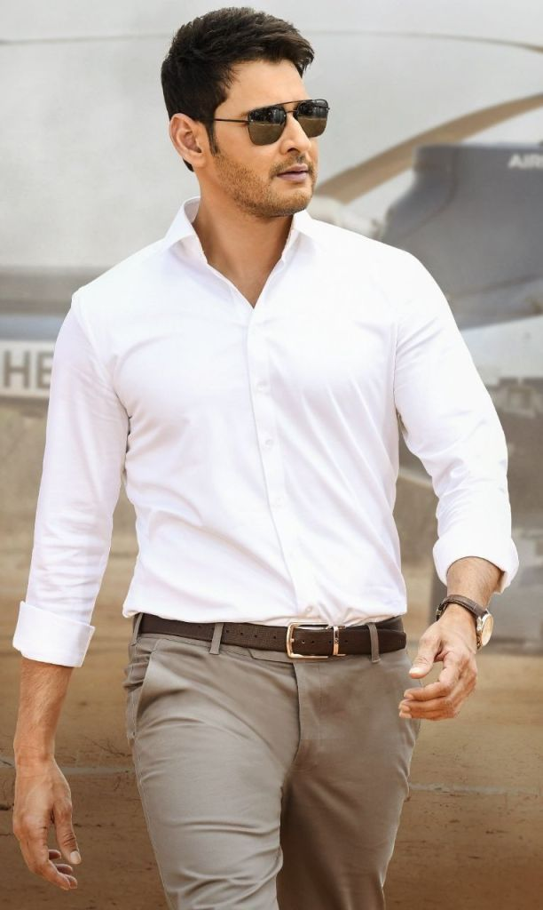

ABOUT:

Ghattamaneni Mahesh Babu (born 9 August 1975) is an Indian actor, producer, media personality, and philanthropist who works mainly in Telugu cinema. He has appeared in more than 25 films, and won several accolades including, eight Nandi Awards, five Filmfare South Awards, three CineMAA Awards, three South Indian International Movie Awards and one IIFA Utsavam Award. He also owns the production house G. Mahesh Babu Entertainment. The younger son of veteran Telugu actor Krishna, Babu made his debut as a child artist in a cameo role in Needa (1979), at the age of four, and acted in eight other films as a child artist. He made his debut as a lead actor with Rajakumarudu (1999) which won him Nandi Award for Best Male Debut. Babu achieved his breakthrough with the supernatural drama Murari (2001), and the action film Okkadu (2003). He went on to act in other commercially successful films such as Athadu (2005), Pokiri (2006), Dookudu (2011), Businessman (2012), Seethamma Vakitlo Sirimalle Chettu (2013), 1: Nenokkadine (2014), Srimanthudu (2015), Bharat Ane Nenu (2018), Maharshi (2019), and Sarileru Neekevvaru (2020). Pokiri held the record of being the highest-grossing Telugu film while Sarileru Neekevvaru, his highest grosser, collected over ₹2.6 billion at the box office. Referred to in the media as the Prince of Tollywood, he is one of the most popular and influential actors of Telugu cinema, and is described as the superstar of Telugu cinema by his fans. In addition to being an actor, he is a humanitarian and philanthropist - he runs a charitable trust and non-profit organisation, Heal-a-Child. He is also associated with Rainbow Hospitals as their goodwill ambassador. He plunged into the film exhibition business along with Narayandas Narang of Asian Group with the inauguration .
| {kind=link}
{kind=link}
{kind=link}